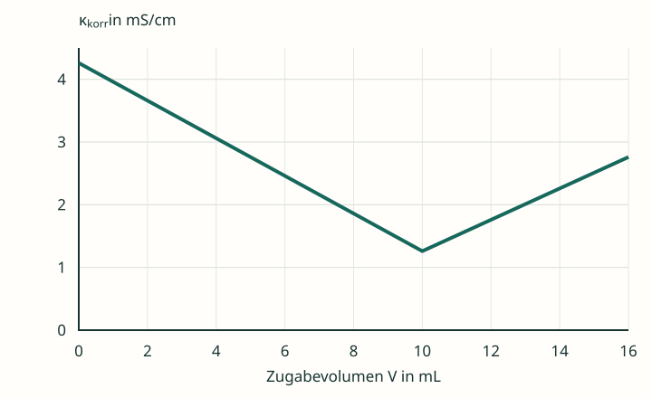

Eine Kurve ohne Erklärung
Eine reine Salzsäureprobe enthält 1,00 mmol HCl. Zugegeben wird Natronlauge mit c(NaOH) = 0,100 mol/L. Zusätzliche Salze sind nicht vorhanden.


Zur Darstellung: Die Kurve ist ein didaktisches Rechenmodell bei 25 °C, keine Messreihe. Gezeigt ist die auf das Anfangsvolumen bezogene Leitfähigkeit κkorr = κ · (V₀ + V)/V₀. Der reine Verdünnungseffekt der Zugabe ist damit herausgerechnet; Ionenbeweglichkeiten gelten als konstant. V₀ = 100,0 mL. Die Volumenkorrektur wird in Material 4.2 erklärt.
Kurve und Ionenbestand verknüpfen
- Beschreibe den Verlauf zunächst nur anhand der Grafik. Bestimme näherungsweise das Äquivalenzvolumen und prüfe es mit dem Stoffmengenverhältnis.
- Übertrage die Tabelle. Notiere die für die Leitfähigkeit wesentlichen Ionen und die Veränderung ihrer Stoffmengen.
- Erkläre für jeden Kurvenabschnitt, warum die Leitfähigkeit fällt, einen niedrigen Wert erreicht oder steigt. Gehe ausdrücklich auf Na⁺ und Cl⁻ ein.
- Prüfe die Aussage: „Am Äquivalenzpunkt liegt nur noch Wasser vor.“
| Bereich | Wesentliche Ionen | Änderung / Erklärung |
|---|---|---|
| Vor dem ÄP | … | … |
| Am ÄP | … | … |
| Nach dem ÄP | … | … |
Betrachte bei den Änderungen die Stoffmengen. Die tatsächliche Konzentration eines unverbrauchten Ions sinkt bei größer werdendem Gesamtvolumen. Genau diesen Volumeneffekt trennt κkorr von der hier betrachteten Reaktion.
Hilfen nach Bedarf
Hilfe 1 · Ausgangslösung und Zugabe
Welche Ionen bringt die Salzsäure mit, welche bringt die Natronlauge mit? Verwende die Ionengleichung aus 3.1. Zwei Ionensorten reagieren, zwei bleiben gelöst.
Hilfe 2 · Vor und nach dem Verbrauch
Solange noch Säure im Überschuss ist, werden zugegebene OH⁻-Ionen verbraucht. Nach ihrem vollständigen stöchiometrischen Umsatz bleibt weiterer OH⁻-Überschuss in Lösung. Na⁺ wird mit jeder Zugabe hinzugefügt.
Hilfe 3 · Die Beweglichkeit entscheidet
H₃O⁺ ist erheblich beweglicher als Na⁺. Vergleiche vor dem ÄP das verschwindende H₃O⁺ mit dem hinzukommenden Na⁺. Nach dem ÄP kommen Na⁺ und besonders bewegliches OH⁻ gemeinsam hinzu.
Erklärung und Musterlösung
Die gesamte Kurve auf Teilchenebene erklären
Der Graph besitzt im idealisierten Modell seinen tiefsten Punkt bei VE = 10,0 mL. Die Stoffmengenprüfung ergibt 0,100 mol/L · 0,0100 L = 0,00100 mol = 1,00 mmol OH⁻. Das passt zur 1 : 1-Reaktion.
| Bereich | Ionenbestand | Deutung |
|---|---|---|
| Vor dem ÄP | n(H₃O⁺) sinkt; n(Na⁺) steigt; n(Cl⁻) bleibt gleich. | OH⁻ wird praktisch sofort umgesetzt. Bewegliches H₃O⁺ wird in der Ladungsbilanz durch weniger bewegliches Na⁺ ersetzt. |
| Am ÄP | Vor allem Na⁺ und Cl⁻; jeweils 1,00 mmol. | Die analytisch zugegebene OH⁻-Menge entspricht der Säuremenge. Der Salzbeitrag bleibt. |
| Nach dem ÄP | n(OH⁻) und n(Na⁺) steigen; n(Cl⁻) bleibt gleich. | Überschüssige Natronlauge liefert weitere Ladungsträger; OH⁻ trägt stark bei. |
Das Minimum bedeutet keine Ionenfreiheit. Die Lösung enthält am ÄP Natrium- und Chloridionen und leitet weiterhin. Der sehr kleine Beitrag aus der Eigenprotolyse des Wassers wird in der Grafik weggelassen.
Die sinkende Leitfähigkeit vor dem ÄP lässt sich hier nicht mit „immer weniger Ionen“ begründen: Im stöchiometrischen Modell tritt für jedes verbrauchte H₃O⁺ ein Na⁺ hinzu. Ausschlaggebend ist der Wechsel der Ionenbeweglichkeit.
Selbstkontrolle: Erklärst du die Richtungsänderung mit der Reaktion und den Ionenbeweglichkeiten? Ist Cl⁻ in allen drei Bereichen enthalten?
Zurück zur Checkliste
Erkläre den fallenden und steigenden Ast der Kurve in eigenen Worten. Begründe, weshalb ihr Minimum oberhalb von null liegt.
Fachliche Quellen und Modellgrenzen
- Tel Aviv University: Conductometric Titrations, Tabelle 1 – Grenzleitfähigkeiten bei 25 °C, insbesondere zum Vergleich von Chlorid, Nitrat und Acetat. Die Grafiken verwenden bewusst gerundete Modellbeiträge.
- OpenStax, Chemistry 2e, 4.1: Writing and Balancing Chemical Equations – vollständige und gekürzte Ionengleichungen.
- IUPAC Gold Book: Conductometric titration – Auswertung über den Schnitt linearer Kurvenbereiche.
- Journal of Chemical Education (2010): Conductimetric Titrations: A Predict–Observe–Explain Activity for General Chemistry – Leitfähigkeitsverläufe starker und schwacher Säuren, einschließlich eines kleinen Anfangsabfalls bei Essigsäure.
Eigenständig entwickelte Lerntexte, Aufgaben, Musterlösungen und Grafiken. Das selbst berechnete Schema verwendet gerundete konstante Ionenbeiträge und vollständige Neutralisation. Reale Messpunkte können besonders um den Äquivalenzpunkt von den idealen Geraden abweichen.